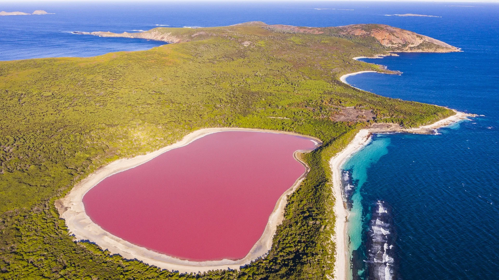
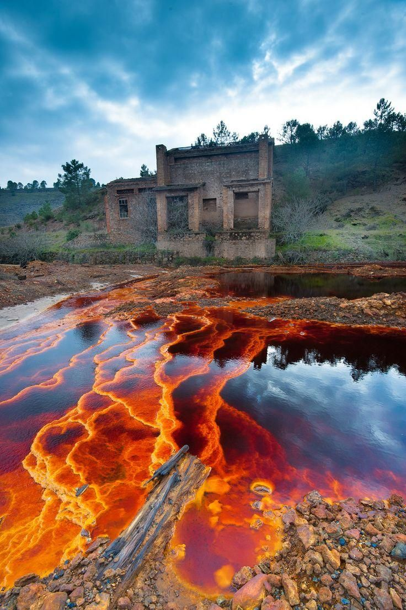
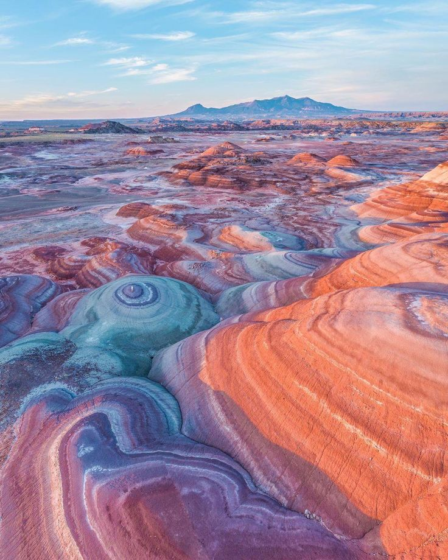
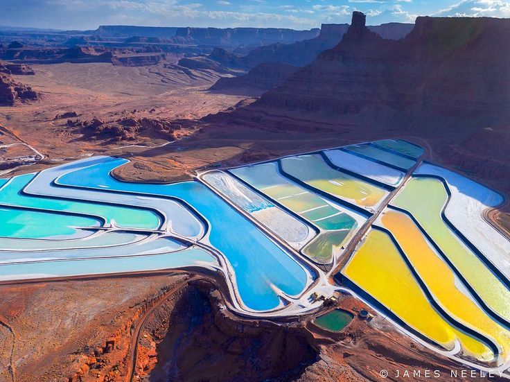

Pink Salt Lakes
In high-salinity lakes, microbes and algae can produce pigments that shift the water toward pink, rose, or red tones.

From Imagined Color to Landscape Reality explores how dreamlike, digitally imagined colors can be translated into real landscape conditions. The project begins with the observation that many colors that appear artificial or fictional already exist in nature and industry, not as surface decoration, but as evidence of specific material, chemical, biological, and ecological processes.
Instead of asking how to apply color to landscape, the project asks how color is produced by landscape. Through visual research, case studies, speculative image-making, material experiments, and exhibition installation, it reframes color as an environmental process rather than a visual effect.
When fictional colors already exist
The project started from the visual language of digitally generated landscapes, where colors often appear too vivid, too smooth, or too strange to belong to reality. Instead of treating these colors as purely fictional, I began to ask whether similar colors already exist in real environments.
This shift changed the project from an image-making exercise into a research question: if imagined colors can be found in real landscapes, what processes produce them?
These AI-generated reference images explore imagined landscape colors that appear fictional, synthetic, or dreamlike. Rather than treating them as pure fantasy, the project uses them as a starting point to ask how similar color conditions already exist in real environments through mineral oxidation, microbial activity, saline ecosystems, biological growth, and industrial residues.


The project then looks for real-world parallels: landscapes where intense colors are produced by environmental conditions rather than applied as surface decoration. These examples show that seemingly fictional colors can emerge from living organisms, mineral reactions, geological formations, and industrial processes.

In high-salinity lakes, microbes and algae can produce pigments that shift the water toward pink, rose, or red tones.

Río Tinto's red color is connected to acidic water, iron-rich conditions, mining history, and microbial processes.

Layered sedimentary formations and mineral-rich soils create bands of red, pink, gray, blue, and purple. These colors are exposed through geological deposition, erosion, and mineral oxidation over time.

Evaporation ponds and mineral extraction sites can create intense artificial-looking blues, greens, and reds through industrial water management and chemical concentration.
Color is not applied. Color is produced.
I organized the research around different ways color can be produced in landscapes: biological growth, mineral formation, chemical reaction, industrial extraction, and designed intervention. In each case, color functions as evidence of an underlying system.
Pink lakes, red soils, luminous green waters, and toxic industrial residues are not simply unusual appearances. They reveal processes such as salinity, microbial activity, oxidation, pollution, extraction, and environmental transformation.
microbial activity / algae / growth
oxidation / deposits / geological exposure
pollution / extraction / residue
reconstruction / intervention / controlled conditions
Recreating the conditions, not copying the color
The project does not try to imitate the appearance of colorful landscapes directly. Instead, it asks how the conditions behind those colors might be reconstructed, exaggerated, or redesigned.
Through images, models, material samples, and speculative landscape scenarios, I translated research cases into possible design pathways. The goal was to move from visual fascination to environmental logic: what would it mean to design with the processes that generate color?
Making research spatial
The final installation translated the research into a spatial exhibition format. Images, printed materials, models, samples, and video were arranged together to create a field of evidence, speculation, and atmosphere.
Rather than presenting the project as a single final landscape proposal, the exhibition showed color as a set of processes and possibilities. Viewers could move between visual references, material studies, and speculative representations, seeing color as something active and environmental.


The research document collects the theoretical framework, case studies, and visual thinking behind the project. It supports the exhibition by showing how the project moved from imagined color to environmental process.
Theoretical framework, case studies, and visual research behind the project.
The video functions as an atmospheric companion to the research. It extends the project's visual world, but remains secondary to the research and exhibition structure.
This project reframes color as an environmental process rather than a surface effect. Through research, image-making, and exhibition installation, it asks how landscapes might be designed by activating the material conditions that already produce seemingly impossible colors.